House Concept
On a world that was never built for us,
one athlete chose to run.
The Idea
Every great brand moment begins with a question that has no practical answer. Not "can we get there?" but "once we arrive, what makes us human?" THE FIRST STEP is a spec concept imagining the moment an athlete takes their first stride on Martian soil. Not for science. Not for conquest. For the pure, irrational, deeply human refusal to be still.
Mars itself narrates. A four-billion-year-old entity that has watched the universe in silence, suddenly confronted by something it never expected: someone who came not with a flag, not with a mission, but with running shoes. And for the first time in the planet's ancient existence, it felt something.
~63s
Runtime
19
Clips
9:16
Designed for Mobile
7
Audio Layers
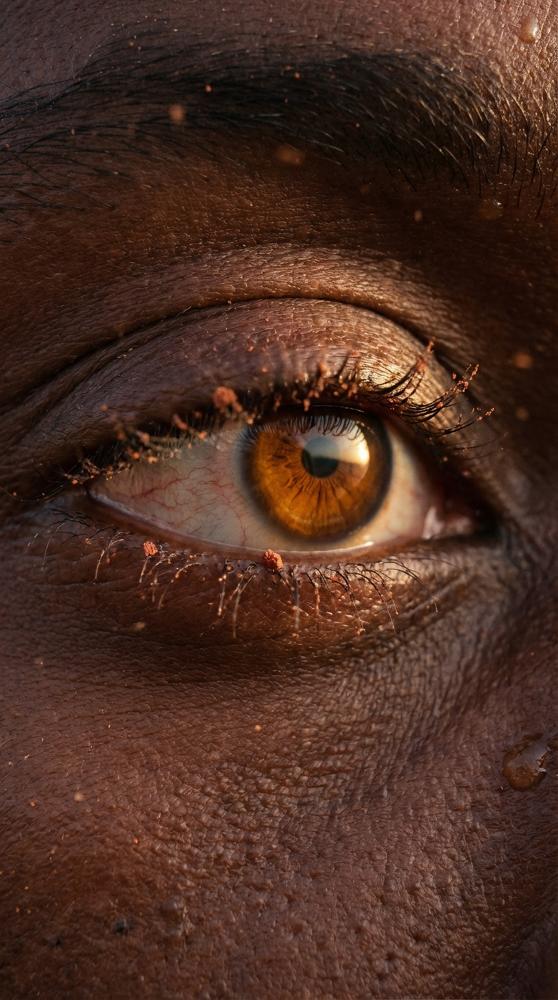
I have watched your kind...
from the moment you first looked up.
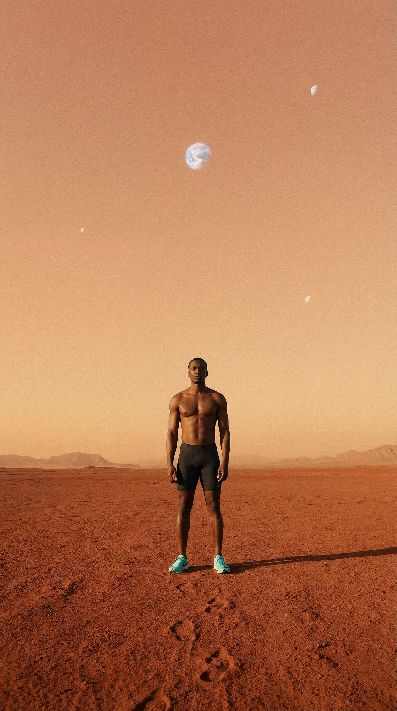
Fragile things.
Building towers out of sand.
Planting flags in places you cannot breathe.
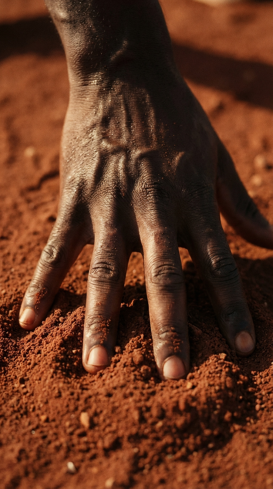
You come with your machines.
Your measurements.
Your need... to own what was never yours.
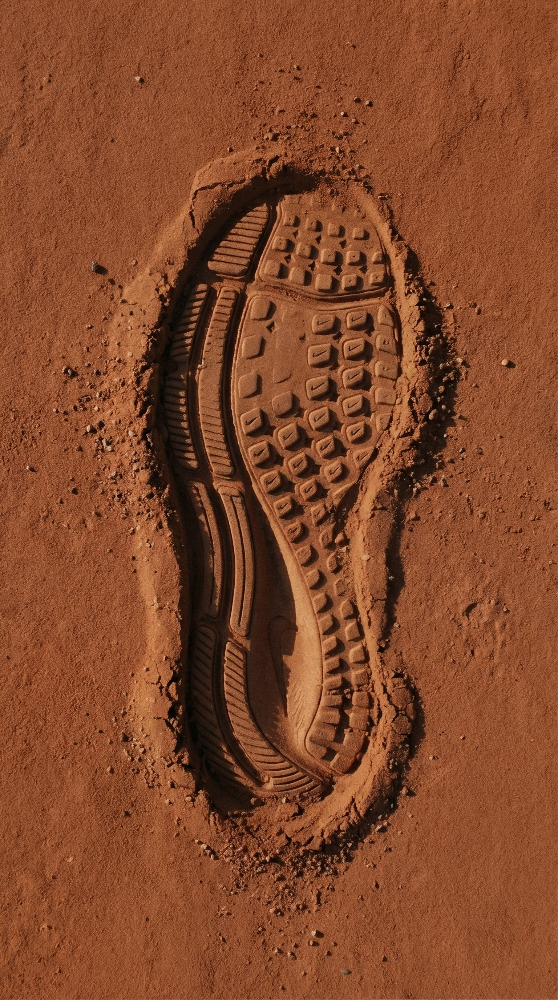
I was not built for you.
My soil was not made for your feet.
My air will not fill your lungs.
My silence... does not want your noise.
Visual Architecture
World 1
Rust red dust, rocky alien terrain, butterscotch horizon. This is where the running happens. Low angles, wide establishing shots, the athlete reduced to a speck against geological enormity.
World 2
Macro intimacy. The camera treats skin, muscle, and sweat the way nature documentaries treat terrain. Dust caught in eyelashes. Sweat catching golden light. The body as landscape.
World 3
Mars dust storms reimagined as the dreamlike element. Particles floating in slow motion, backlit by sun. The athlete moves through dust the way water moves through dreams.
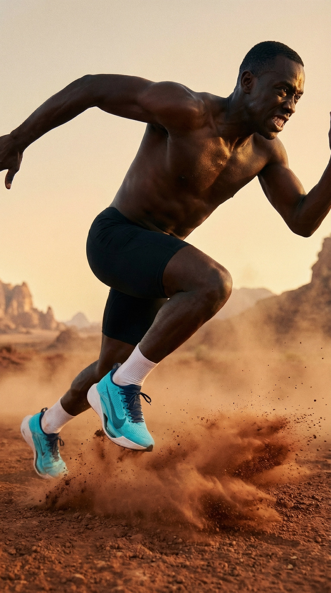
But this one...
This one did not come with a flag.
Did not come with a mission.
Did not come to take.
This one... came to run.
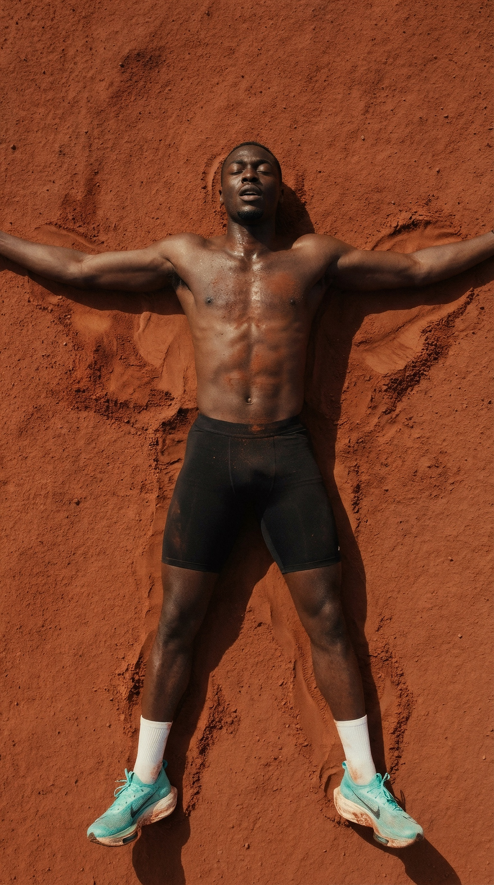
No record. No clock. No audience.
Just dust...
and the refusal to be still.
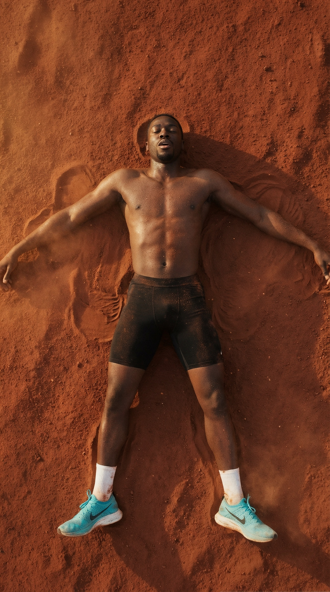
Four billion years of silence.
And I have never once...
...been moved.
Selected Frames
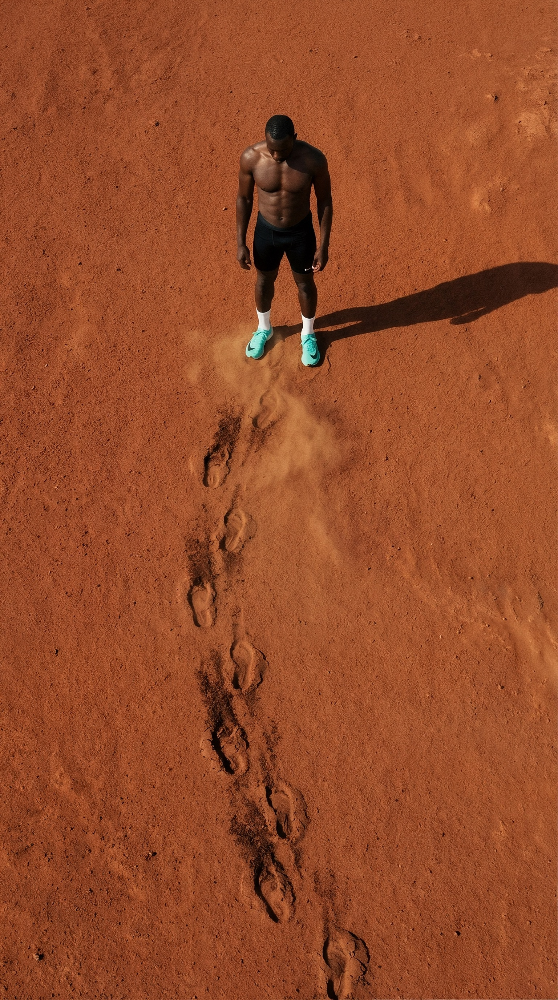
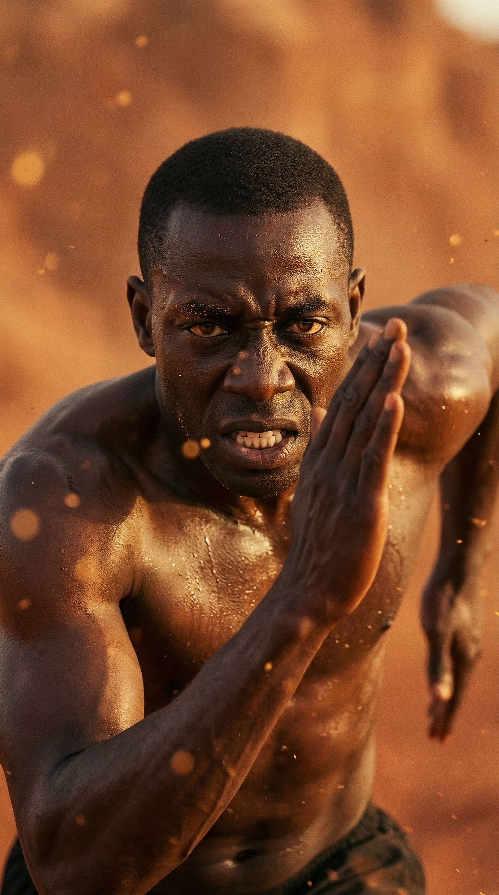
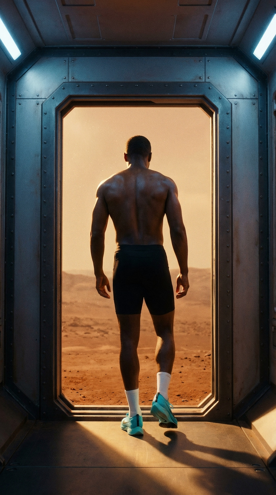
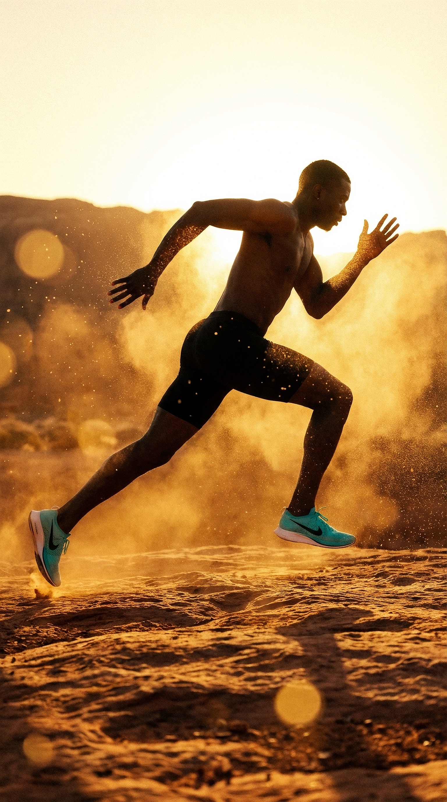
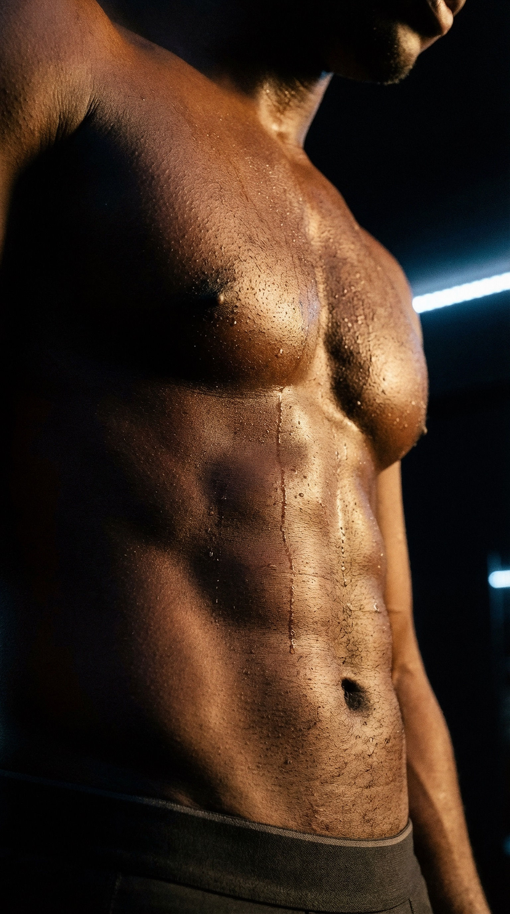
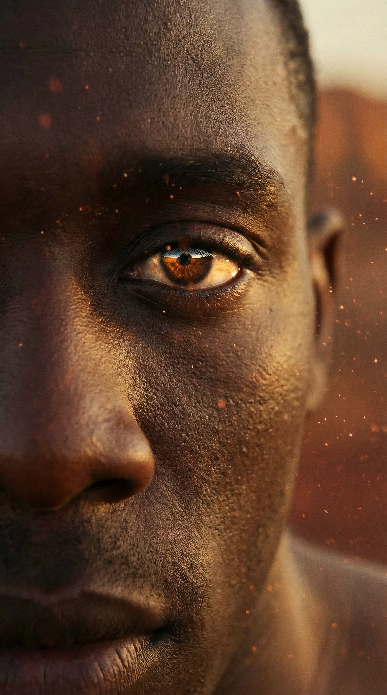
Colour Strategy
The entire palette is built on chromatic opposition. Warm rust Mars environment, neutral black compression suit anchoring the athlete, and electric cyan shoes that cut through the frame like ice on fire. The shoes pop because everything else is drained toward earth tones.
Mars Rust
Amber
Sand
Suit Black
Cyan Shoe
Highlight
Process
Every frame of THE FIRST STEP was conceived, generated, and assembled using AI tools. Still frames generated through Freepik Spaces and upscaled through Magnific. Video clips brought to life through Seedance 2.0 and Kling 3.0, with motion prompts written in Chinese for maximum quality from Seedance. Voiceover crafted through ElevenLabs. Music generated through Suno. Final assembly, colour grade, and sound design completed in CapCut and Premiere Pro.
This is a demonstration of what becomes possible when creative direction meets the new generation of generative tools. Not as a replacement for traditional filmmaking, but as an entirely new canvas for concepts that would otherwise require planetary-scale budgets.
Just Steeze It.